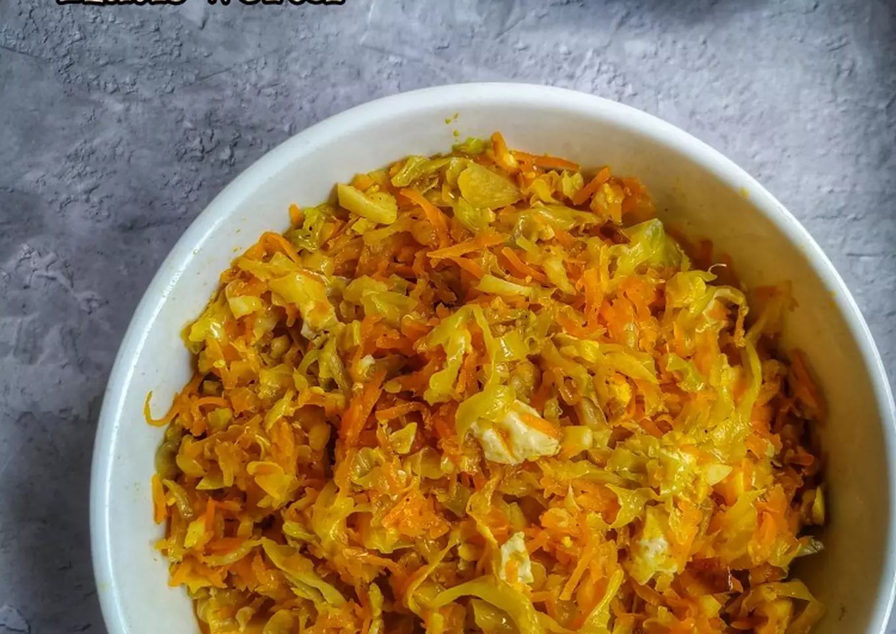

1. Oseng kubis wortel
Bahan:
- 1 buah kubis, iris2
- 2 buah wortel, parut
- 1 butir telur, orak arik
- 6 siung bawang merah
- 4 siung bawang putih
- 1,5 sdt garam
- 3-4 sdm gula merah
- 1/2 sdt ladaku
- 1/2 sdt kaldu bubuk
Cara membuat:
langkah 1
- Tumis bawang putih bawang merah sampe harum
langkah 2
- Masukkan kubis, wortel, telur. Aduk rata
langkah 3
- Bumbui. Aduk lagi, masak sebentar. Matikan api
langkah 4
- Angkat dan sajikan.